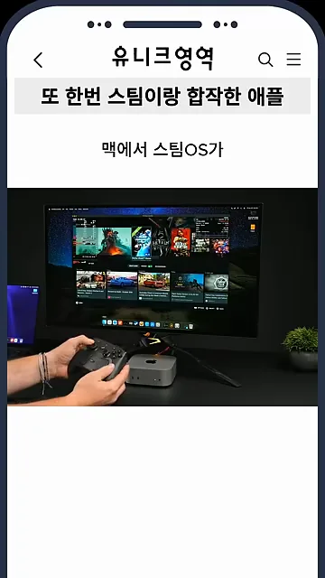
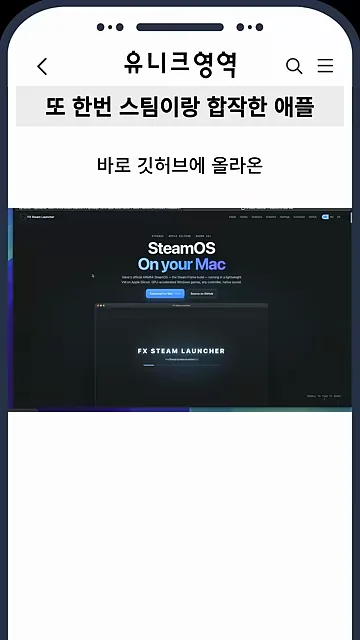
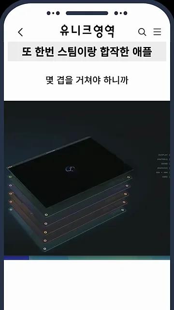
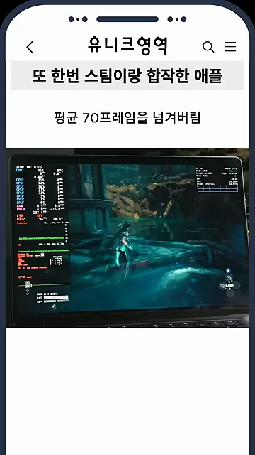
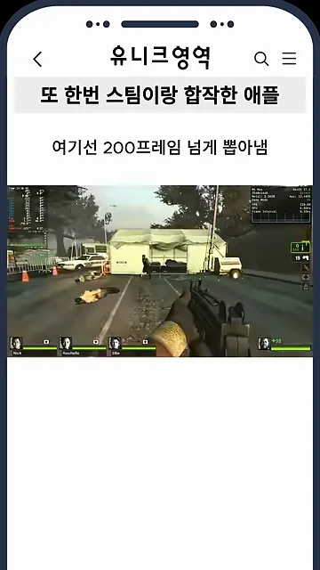
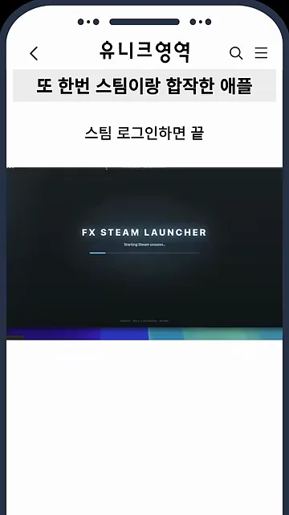
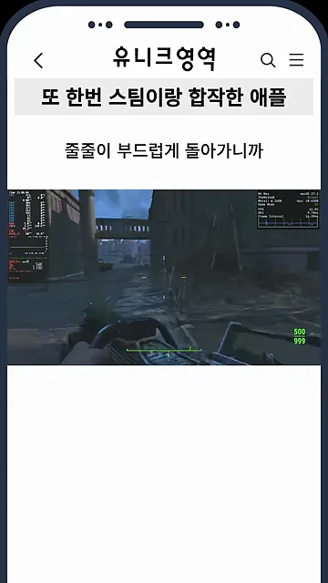
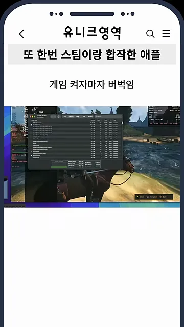

맥에서 스팀OS가 돌아가는 방식
맥에서 스팀OS가 실제로 돌아가요. 다른 컴퓨터가 화면을 보내 주는 스트리밍도, 서버에서 돌리는 클라우드 게이밍도 아니에요. 밸브가 만든 스팀OS 이미지를 손대지 않고 그대로 써요. 아래 장면에서는 모니터 아래 놓인 맥미니에 패드를 연결해, 게임 라이브러리가 뜬 스팀 화면을 보여 줘요.

깃허브에 올라온 steamac
소개하는 건 깃허브에 올라온 steamac 프로젝트예요. 화면 속 소개 페이지 가운데에 'SteamOS On your Mac'이라는 큰 제목이 있고, 그 아래 창에 앱 이름인 'FX STEAM LAUNCHER'가 떠 있어요.

이 프로젝트는 원래 밸브의 VR(Virtual Reality) 헤드셋 스팀 프레임에 들어가는 ARM판 스팀OS를 맥의 가상머신에 얹었어요. 게임 화면 하나가 나오기까지 가상머신과 번역 레이어를 몇 겹씩 거쳐야 해요. 영상은 이 겹을 아래처럼 판 여러 장이 포개진 그림으로 보여 줘요. 그래서 처음엔 게임은 무리라고 다들 코웃음을 쳤대요.

실제로 얼마나 잘 돌아가나요?
겹이 많은데도 결과는 예상과 달랐어요. M4 Max 맥북에서 스텔라 블레이드가 평균 70프레임을 넘겼대요. 화면 왼쪽 위에 성능 수치를 보여 주는 오버레이가 떠 있어요.

맥에서 못 돌리던 32비트 게임
맥이 32비트 앱을 버리면서 아예 실행조차 못 하던 게임도 여기서는 200프레임 넘게 나와요. 화면에 나오는 게임은 레프트 4 데드 2예요. 아래쪽에 생존자 네 명의 체력 막대가 보여요.

영상이 말한 결과를 모으면 이래요.
| 게임 | 기기 | 영상이 말한 결과 |
|---|---|---|
| 스텔라 블레이드 | M4 Max 맥북 | 평균 70프레임 넘김 |
| 32비트 게임 (화면: 레프트 4 데드 2) | 밝히지 않음 | 200프레임 넘김 |
| 스카이림, GTA(Grand Theft Auto) 4, 폴아웃 4 | 밝히지 않음 | 부드럽게 돌아감 |
| 게임 전반 | 맥미니 M6 기본형 (램 16GB) | 켜자마자 버벅임 |
설치는 로그인 한 번
설치는 앱을 받아서 스팀에 로그인하면 끝이에요. 실행하면 'FX STEAM LAUNCHER' 로고와 진행 막대가 뜨고, 그 아래에 스팀 세션을 시작한다는 문구가 보여요.

스카이림, GTA 4, 폴아웃 4도 줄줄이 부드럽게 돌아간대요. 아래 장면은 1인칭으로 무기를 든 채 폐허가 된 거리를 걷는 모습이에요. 아래쪽 초록 나침반 막대와 오른쪽 아래 초록 탄약 숫자(500, 999)를 보면 폴아웃 4로 보여요. 양쪽 위에는 성능 오버레이가 떠 있어요. 영상은 맥을 사 놓고 게임을 못 해서 윈도우 노트북을 따로 산 사람에게 특히 반가울 거라고 말해요.

16GB 맥에서는 버벅여요
마지막에 반전이 있어요. 최신 맥미니 M6 기본형은 램이 16GB라 게임을 켜자마자 버벅여요. 아래 장면은 게임 위에 macOS의 활동 모니터 창을 띄워 메모리 사용량을 보여 주는 모습이에요. 영상은 게임을 하려면 램 32GB 이상을 권해요.
